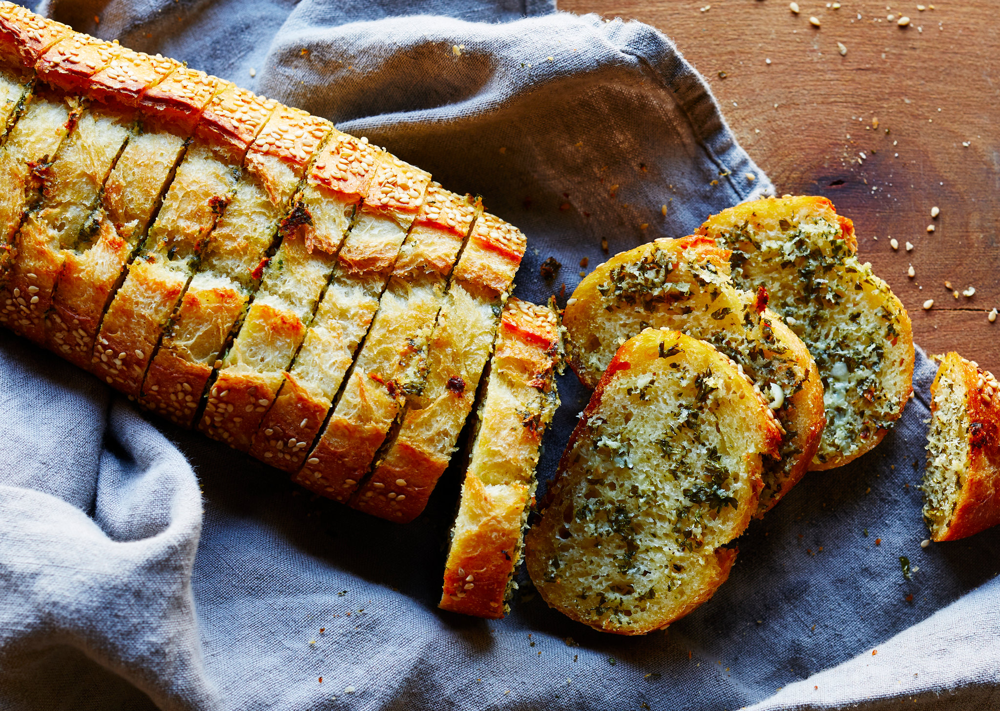

Garlic Bread

Welcome to my page! Today we will learn about how to make Garlic Bread!
Ingredients:
- 1 1/2 cups (355 ml) warm water (105°F-115°F)
- 1 package (2 1/4 teaspoons) of active dry yeast
- 3 3/4 cups (490 g) bread flour
- 2 Tbsp olive oil
- 2 teaspoons salt
- 1 teaspoon sugar
Steps:
- Sprinkle yeast over warm water in a small bowl, gently stir, and let it sit for 5 minutes.
- In the bowl of a standing electric mixer, add the flour, olive oil, salt, and sugar. Use a paddle attachment and mix on low speed for a minute.
- Slowly pour the warm yeast water into the bowl with the mixer running. Increase the speed to medium and mix until the dough is smooth and elastic, about 10 minutes.
- Form the dough into a round and coat it lightly with olive oil. Cover the dough with plastic wrap and let it rise until it doubles in size, 1-2 hours.
- Divide the dough into two balls and let them rest for 10 minutes. Working one piece at a time, on a lightly floured surface, flatten the dough into a disk and then pull and stretch the edges to form a 12-inch circle.
- Transfer the dough to a pizza pan or pizza stone. Add your toppings and bake in a 500°F oven for 8-10 minutes.
- Voila! Your Garlic Bread is ready.